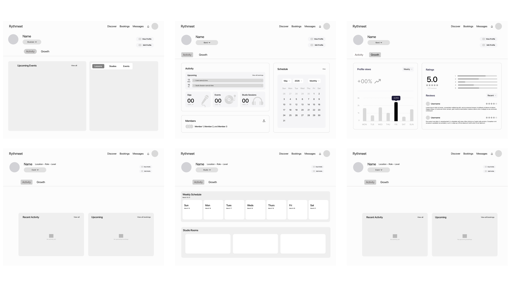

about the client
rythmeet is a music networking platform that connects musicians, venues, studios, event organizers, and teachers, cutting out the middlemen and fees that usually get in the way of building real connections in the music community.
this project was completed through mdc praxis, medium design collective's client-facing program that pairs student design teams with real companies to solve real product problems.
the challenge
how might we...
streamline rythmeet's user experience by simplifying user flows and establishing consistent ui across the website?
research & critique
the process started with a full evaluation of rythmeet's existing website, with critique focused on four core flows: signing up, editing a profile, creating events, and reading dashboard stats.
- sign-up: a single-step form with little guidance and no sense of progress
- editing a profile: scattered fields with no clear structure for musicians to showcase their skills
- creating events: redirect-heavy, with too many options presented at once
- dashboard stats: dense, scroll-heavy, and hard to scan at a glance
the critique led to a proposed user flow diagram meant to streamline the experience end to end. given time constraints, the project scope was initially narrowed to two flows: creating a profile and creating an event.
sign-up flow redesign
two directions for the sign-up flow were explored side by side, each testing a different balance of speed versus upfront personalization.
version 1

- only email and password are collected up front
- google sign-in sits below the form as a secondary option
- fastest possible path to a created account, with personalization left for later
version 2

- full name and date of birth are collected alongside email and password
- google sign-in is promoted to the top of the form as the fastest option
- a warmer, photography-forward layout echoes rythmeet's "where music connects" brand tone
step-by-step onboarding

the multi-step direction: role selection, genre, and skill details are broken into focused steps with a progress slider, ending on a playful "turn it up" confirmation screen.
create/edit events flow
the create/edit events flow was redesigned around speed. a pop-up window replaced the original full-page redirect, and the number of options an organizer has to sort through at each step was streamlined.
event entry point

why this layout
- the create event button lives directly on the organizer's own profile, next to their existing events, so there's no separate dashboard to dig through
- impact stats (total attendees, events created) sit right beside the button to reinforce momentum and encourage repeat use
- the venue map stays on the same page so organizers can confirm location details before starting event creation
quick-create pop-up

why this layout
the pop-up is broken into four steps: details, schedule, registration, and logistics. this keeps organizers on the same page instead of bouncing them across the site.
- a pop-up was chosen over a full-page redirect so organizers never lose their place on their profile
- registration type and cancellation policy are decided in one step, instead of being buried in separate settings
- equipment defaults to "provided by venue" to cut down on repetitive data entry for touring artists
dashboard & branding guidelines redesign
with the initial scope complete, the team split into two groups to take on two more projects: continuing the redesign of the dashboard, and updating rythmeet's branding guidelines.
dashboard redesign
the professional feel of the original dashboard was preserved, but the main goal was letting users switch easily between dashboards for different roles (e.g. musician to band). tabs were introduced, the number of metrics shown per tab was reduced, and the page became an at-a-glance, non-scrollable view.

every role gets its own dashboard: musician, band, studio, and event organizer, each with dedicated activity and growth tabs.
profile switching
profile management got its own upgrade too. an account can hold multiple profiles (say, a musician profile and a band profile), and the account menu lets users jump between them without logging out and back in.
full profile editor

every profile field, from bio to skill level to collaboration status, lives in one organized editor.
switching profiles

the account menu shows which profile is active and makes adding or switching profiles a one-click action.
updated branding guidelines
the guidelines were refreshed with more pastel colors and gradients folded into the identity system, reinforcing the idea of harmony and of connecting people through their shared love of music.
branding walkthrough
a walkthrough of the updated brand system: color palette, gradient usage, and type stack.
final deliverables
🔐 sign-up & onboarding
a consolidated, multi-step sign-up flow with a visual progress indicator and playful confirmation screen.
🎟️ event creation flow
a streamlined, pop-up-based flow for creating and editing events without leaving the page.
📊 role-based dashboard
an at-a-glance dashboard that adapts across musician, band, studio, and event organizer roles.
🎨 branding guidelines
an updated visual identity system with pastel colors, gradient usage, and type guidance.
impact & learnings
this project reinforced the value of iterative design: starting with critique, moving through structured user flow improvements, and finishing with a cohesive branding system. working across a large, cross-functional team required clear communication and modular design thinking to keep every page consistent.
by focusing on simplification at every step, from onboarding to dashboards, the redesign helped rythmeet feel more intuitive and harmonious, better reflecting its mission of connecting people through music.